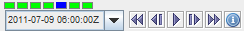
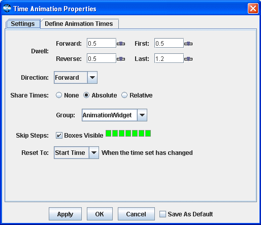
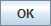
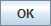
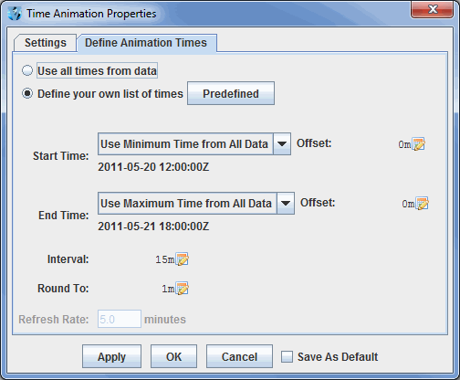
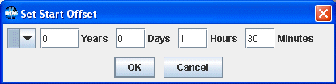
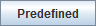
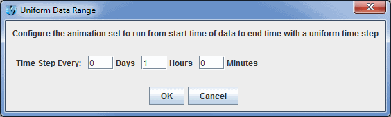
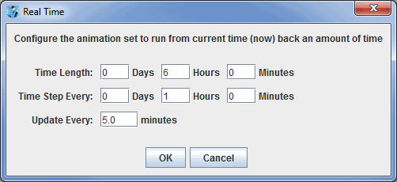

Time Animation
Time Animation Widget
Each McIDAS-V display area has a set of time animation controls above the Main Display window.

Image 1: Time Animation Widget
The Time Animation Widget controls looping of displays through time. A series of small green boxes is displayed representing each frame of the animation. The
box corresponding to the current time is colored blue. Click on a box to select a different time. Right-click on a box to disable that frame in the animation. Disabled boxes will be colored red. You can also Ctrl+left click on a box to turn on/off all of the frames to the left of the box you clicked on, and Shift+left click to turn on/off all of the frames to the right of the box you clicked on.
The time of the data is displayed in the labeled pull-down list and in the entries of the pull down list on the left. Holding the mouse over the time will show information about how many frames are in the loop, and what the starting and ending times are. The toolbar of button icons, on the right, control time animation. The Time Animation Widget buttons do the following:
- Beginning - Shows the first frame, and stop looping if looping is on.
- Back One - Steps back one frame.
- Play/Stop - Toggles looping on or off.
- Forward One - Steps forward one frame.
- End - Shows the last frame, and stop looping if looping is on.
- Properties - Shows the Time Animation Properties dialog box.
Time Animation Properties Dialog
Click on the in the animation controls to see the Time Animation Properties Dialog box. This dialog has two tabs: Settings and Define Animation Times.
The Settings tab allows for defining how looping will work for the display:

Image 2: Settings Tab of the Time Animation Properties Dialog
By pressing  or , the properties will be set in the Animation Widget. If the Save
As Default checkbox checked, then the properties will be saved and
used every time a new Animation Widget is created. For example, you may find
that you are always setting the dwell rate to a particular value. You can save
that state as the default state for all Animation Widgets that are subsequently
created, both in the current run of McIDAS-V and in future runs.
or , the properties will be set in the Animation Widget. If the Save
As Default checkbox checked, then the properties will be saved and
used every time a new Animation Widget is created. For example, you may find
that you are always setting the dwell rate to a particular value. You can save
that state as the default state for all Animation Widgets that are subsequently
created, both in the current run of McIDAS-V and in future runs.
- Dwell - Controls how fast the animation occurs. Click on the slider icon:
 to change the values or type a value into the field and press Enter. Values are seconds/frame.
to change the values or type a value into the field and press Enter. Values are seconds/frame.
- Forward - Controls speed of looping forward.
- Reverse - Controls speed of looping backwards.
- First - Chooses how long first frame is seen.
- Last - Chooses how long last frame is seen.
- Direction - Controls which direction the loop goes when you press play.
- Forward - Loops forward in time.
- Backward - Loops backward in time.
- Rocking - Alternates looping between forward and backward directions.
- Share Times - Shares the time animation in a display with the animation in other displays with the Share Times button. This allows for animation properties to be synced between panels. See the Sharing page for more information.
- None - Does not share any times with any other displays.
- Absolute - Shares absolute times with other displays. For example, if one panel has 30 minute timesteps and another has 60 minute timesteps, if both panels are configured with the Absolute Share Times option, then both panels will loop when the times are the same (at 60 minute intervals).
- Relative - Shares relative times with other displays. For example, if one panel has 10 timesteps and the other has 5 timesteps, if both panels are configured with Relative Share Times, then only the first 5 frames in each panel will be looped through.
- Group - Allows for the sharing time animations properties with some panels, while not sharing with others. You can set up to four different share groups. This allows for things like different panels looping at different speeds and different timesteps used in the loops of different panels.
- Skip Steps - Works the same as in the Main Display window, you can right click on a square to make that time step not visible in a loop. The Boxes visible checkbox enables the time animation boxes to be visible in the Main Display window.
- Reset To - Determines which time step will be displayed when the time set changes.
- Start Time - Returns to the first time step when the time set has changed.
- No Change - Remains at the time step you were at when the time set has changed.
- End Time - Displays the final time of the loop when the time set has changed.
Define Animation Times Tab
The Define Animation Times tab allows for defining a custom animation time set:

Image 3: Define Animation Times Tab of the Time Animation Properties Dialog
By default, the times used in the animation time set are all of the times from
the data that is being displayed. However, a specific time set can be defined by
selecting the Define your own list of times button.
This allows for defining the start time, end time and a time interval. The time interval is used to create the set of time steps (inclusive) between the start and end times. The start time and end time modes are determined one of four ways:
- Use Minimum/Maximum Time from Data - Sets the beginning/end of the loop to be the minimum/maximum times included with your data.
- Current Time (Now) - Sets the animation time set to use the current clock time. This is useful for animation of real time data. If you select this option you can then define how often the animation set is updated with the Refresh Rate field.
- Fixed - Sets a fixed date/time to start/end the loop.
- Relative to End/Start time - Allows you to specify the beginning/end of your loop at a time relative to the end/beginning time. For example, you could set the end time to be the Current Time, and set the start time to be relative to the end time minus 1 hour (using the start time offset field). This would have a loop of data over the last hour, with a time step as defined in the interval field. Note: You cannot have start and end times both be relative to one another.
- Interval - Sets the time interval between time steps in the loop.
- Round To - Sets the rounding factor for the end time in the loop. The Round To field always rounds down to ensure that no future times are used in the loop. For example, if the ending time was 10:23, a 10 minute Round To would end the loop at 10:20, and a 30 minute Round To would end the loop at 10:00.
- Refresh Rate - Sets the number of minutes that the Time Animation Widget will check the current time to see if the timesteps should be updated. This is used if the End Time is set to Current Time (Now) and is used in conjunction with the Round To field. For example, if the time is 10:10 with a Round To value of 15 minutes, the end time of the loop would be 10:00. With a Refresh Rate of 5 minutes, at 10:15, the Time Animation Widget would update itself to have an end time of 10:15.
- Set as Time Driver - Defines the current timesteps in the Main Display to be the time driver. Now, any other field selected to match the time driver will select times that match the Time Animation Widget times. For example, if End Time is set to Current Time (Now), that rounds down to the nearest hour, and the Start Time is Relative to End Time with an offset of -4 hours, there would be 5 timesteps in hourly increments. If these times are set as the time driver, any fields selected to match the time driver will load in data for the times that match closest to the hourly timesteps defined in the Time Animation Widget. For more information, see Time Matching.
Once the start and end time modes have been set, an offset can be
added (or subtracted) to the base time. To change the offset select the  button.
When doing this, the Offset dialog will be shown:
button.
When doing this, the Offset dialog will be shown:

Image 4: Set Round To Value Dialog
This allows for defining a time offset by entering years, days, hours and minutes. Note that this Offset dialog will also include a +/- option when selected from Start Time or End Time.
The  button gives another way to adjust the items in the Define Animation Times tab. The two options from this button are Uniform Across Data Range and Real Time.
- Uniform Across Data range - Opens a Uniform Data Range window, which allows for controlling the Interval.

Image 4: Uniform Data Range Window
- Real Time - Opens a Real Time window, which allows for controlling the length of the loop, the length of each time step, and how often the data is updated.

Image 5: Real Time Window